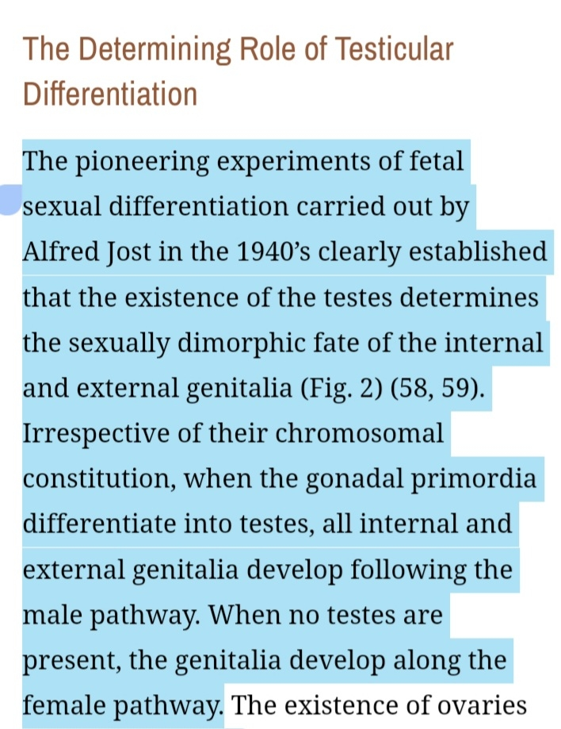
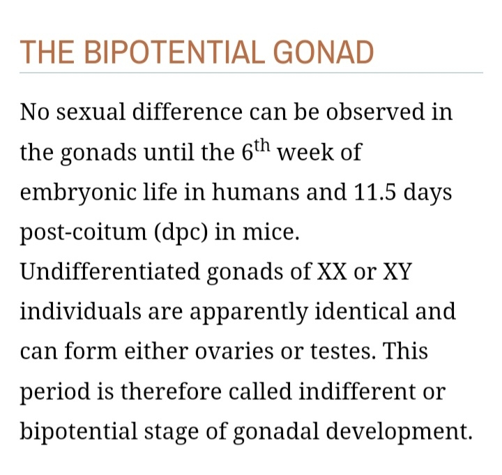
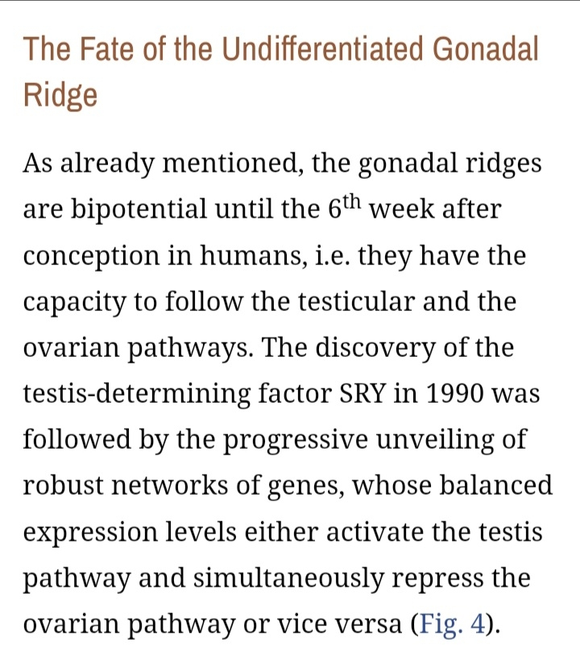
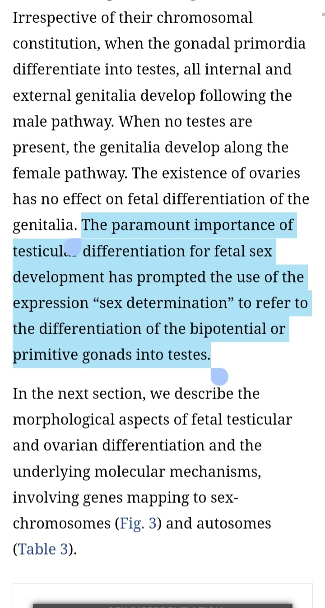

There is a hadith in sahih muslim 2643 says that
《When the drop of (semen) remains in the womb for forty or forty five nights, the angel comes and says:
My Lord, will he be good or evil? And both these things would be written. Then the angel says:
My Lord, would he be male or female? And both these things are written. And his deeds and actions, his death, his livelihood;
these are also recorded. Then his document of destiny is rolled and there is no addition to nor subtraction from it.》
(This hadith has been reported on the authority of A'mash with the same chain of transmitters and in the
hadith transmitted on the authority of Waki )
The question is haw can the baby become male or female after 40d shouldn't it be at the moment of fertilization
when the sperm reaches the ovum when it gives ( XX=female )
( XY=male )
So the gender is determined at moment of fertilization in first week at least
Is that sintafic error in the hadith ?
The answer
Firstly we have to understand the human embryology .
We have to understand that XY or XX Chromosomes are not the one responsible for sex differentiation because of
the new studies
The main cause for sex differentiation called 《SRY》Gen
This gen is activated after about 6 weeks wich is 40d
When the SRY Gen activated it chooses either it should form testis or not
If testis are formed then the body will be formed like male and have the male reproductive system
And if it was absent then the body will be female body with its reproductive system
So the testis are the first sign for sex differentiation wich controlled by SRY Gen
And the first chromosomes
The resources is down here
https://www.ncbi.nlm.nih.gov/books/NBK279001/




When does an embryo become male or female?
Between week 7 and week 12 of pregnancy, the foundations of your baby’s sex organs develop.
https://www.whattoexpect.com/pregnancy/fetal-development/fetal-sex-organs-reproductive-system/
If you have a prenatal blood test (NIPT), you may be able to find out your baby's sex as early as 11 weeks of
pregnancy. Ultrasounds may reveal sex organs by 14 weeks, but they aren't considered fully accurate until 18 weeks.
If you have CVS at 10 weeks, the results will reveal your baby's sex by 12 weeks. If you have an amnio at 16 weeks,
you can find out by 18 weeks. With IVF, you can find out the sex before you even transfer the embryos.
https://www.babycenter.com/pregnancy/health-and-safety/when-and-how-can-i-find-out-my-babys-sex_20004784
Since an ultrasound creates an image of your baby, it can also reveal the sex of your baby. Most doctors schedule an
ultrasound at around 18 to 21 weeks, but the sex may be determined by ultrasound as early as 14 weeksTrusted Source.
It’s not always 100 percent accurate, though. Your baby might be in an awkward position, which makes it difficult to
clearly see the genitals. If the technician can’t find a penis, they’ll conclude that you’re having a girl and vice versa.
But mistakes do happen.
https://www.healthline.com/
Finding out the sex of a developing baby can be an exciting moment in pregnancy. Early blood tests
now make this possible toward the end of the first trimester. However, the results are not always 100% accurate.
the website covers all methods nothing is 100% accurate
https://www.medicalnewstoday.com/articles/
AGD is helpful as an ultrasonographic marker that can determine fetal gender in the first trimester,
especially after 12 wks.
https://www.ncbi.nlm.nih.gov/pmc/articles/PMC6652156/
Sahih muslim 2645 a hearing eyesight at 42 days ?
Al-Qurtubi says this part right here is referring at the end of al-Mudgha (excluding the gender part)
Mudgha is between 4 to 20 weeks
Meaning it would be around 11-20 weeks meaning at 3rd month
Around 12 weeks of pregnancy, specialized sound transmitters called hair cells spring up inside the cochlea and eventually connect to a nerve that sends sound impulses to the brain. This connection is made at about 16 weeks, when your baby may start to hear faint sounds. Ears fully formed. (https://yvdwaudiology.co.za/blog/17460/)
11 weeks in the cochlea, the hair cells are well differentiated and they exhibit typical synapses with nerve endings. Very early in the embryonic life, the auditory and vestibular receptors start their maturation and establish their connections with the peripheral and central nervous system; this indicates that the third month of pregnancy is a particularly sensitive period as far as the inner ear development is concerned. (https://pubmed.ncbi.nlm.nih.gov/3879139/)
Although a baby's eyes can "see" light starting around week 16, their peepers aren't recognizable (as we know them) until about week 20.
(https://www.businessinsider.com/fetus-vision-hearing-development-uterus-2016-9)